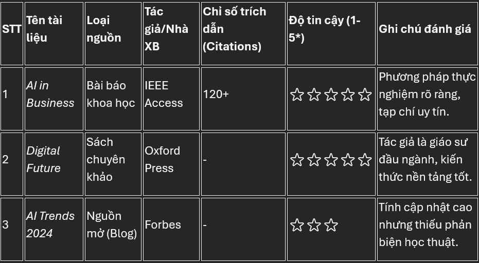
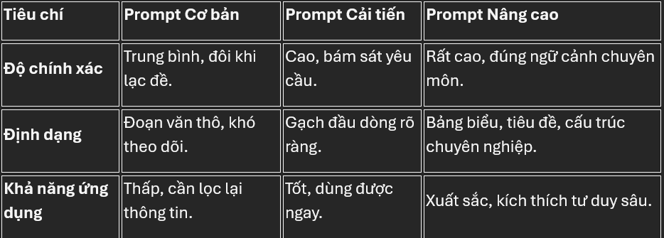

Chào mừng đến với Website của Vũ Phạm Khánh Nam!
Mã sinh viên của mình là 25022957
Mình đang tạo web để lưu lịch sử bài tập nhập môn công nghệ số của mình
BÀI 1 (Click để xem bài tập)
Bài tập 1 của mục 1.4
Nội dung của bài tập 1 ở đây
BÀI 2 (Click để xem bài tập)
Bài tập 2 của mục 2.4
Nội dung của bài tập 2 ở đây
BÁO CÁO: TÌM KIẾM VÀ ĐÁNH GIÁ THÔNG TIN HỌC THUẬT
1. Lựa chọn chủ đề
"Tác động của AI trong chuyển đổi số doanh nghiệp"
Chủ đề này được chọn hẹp để tập trung sâu vào các giải pháp công nghệ thực tiễn thay vì các lý thuyết rộng nát.
2. Chiến lược tìm kiếm dữ liệu
- Từ khóa (Keywords): Sử dụng các toán tử logic:
"Artificial Intelligence" AND "Digital Transformation" AND "SMEs". - Nguồn tìm kiếm: Google Scholar, ResearchGate, ScienceDirect, và thư viện trường.
3. Đánh giá độ tin cậy (CRAAP Test)
- Tác giả (Authority): Đánh giá dựa trên học hàm, học vị và các công trình nghiên cứu trước đó.
- Cơ quan xuất bản (Publisher): Ưu tiên các nhà xuất bản uy tín (Elsevier, Springer, IEEE) hoặc tạp chí danh mục Q1, Q2.
- Tính cập nhật (Currency): Tài liệu được chọn trong vòng 5 năm trở lại đây.
4. Bảng tổng hợp và Đánh giá

5. Danh mục tài liệu tham khảo (Harvard)
Nguyen, A. & Tran, B. (2025). 'AI impacts on SMEs', Journal of Digital Economy, 12(2), pp. 45-60.
BÀI 3 (Click để xem bài tập)
Bài tập 2 của mục 3.4
Nội dung của bài tập 2 ở đây
TỐI ƯU HÓA KỸ NĂNG VIẾT PROMPT TRONG HỌC TẬP
I. Phân tích tác vụ học tập
Việc lựa chọn tác vụ dựa trên quy trình nhận thức của Bloom (Nhớ - Hiểu - Vận dụng - Phân tích):
- Tóm tắt tài liệu: Chắt lọc kiến thức cốt lõi, tránh làm mất luận điểm quan trọng.
- Giải thích khái niệm: Chuyển đổi ngôn ngữ chuyên ngành thành ẩn dụ dễ hiểu.
- Tạo bộ câu hỏi ôn tập: Tự kiểm tra kiến thức (Active Recall).
II. Xây dựng các phiên bản Prompt
Tác vụ 1: Tóm tắt "AI trong giáo dục"
Cơ bản: "Tóm tắt bài viết sau đây cho tôi: [Nội dung]."
Cải tiến: "Tóm tắt thành 5 ý chính, dùng gạch đầu dòng, tập trung vào lợi ích cho SV."
Nâng cao (RCIO): "Bạn là chuyên gia phân tích dữ liệu... Tóm tắt trong 3 câu... Lập bảng Ưu/Nhược điểm... Trình bày bằng Markdown."
Tác vụ 2: Giải thích "Lạm phát"
Cơ bản: "Lạm phát là gì?"
Nâng cao (Chain-of-Thought): "Đóng vai giáo sư... Giải thích cho trẻ 10 tuổi bằng ẩn dụ 'chiếc bánh'... Giải thích từng bước tại sao in tiền làm giá tăng..."
III. Nguyên tắc viết Prompt hiệu quả (Tips)

IV. Nguyên tắc viết prompt hiệu quả (Tips)
Để có kết quả tốt nhất, hãy nhớ quy tắc R-C-I-O:
- R - Role (Vai trò): Xác định AI là ai (Giáo sư, Trợ lý...).
- C - Context (Bối cảnh): Cung cấp tài liệu nguồn hoặc đối tượng mục tiêu.
- I - Instruction (Chỉ dẫn): Sử dụng động từ mạnh (Phân tích, Thiết kế...).
- O - Output (Đầu ra): Quy định rõ định dạng (Bảng, Danh sách...).
* Mẹo: Nếu kết quả chưa ưng ý, hãy điều chỉnh prompt và thử lại (Iterative)!
BÀI 4 (Click để xem bài tập)
Bài tập 3 của mục 4.4
Chưa cập nhập
BÀI 5 (Click để xem bài tập)
Bài tập 2 của mục 5.4
Chưa cập nhập
BÀI 6 (Click để xem bài tập)
Bài tập 4 của mục 6.4
Chưa cập nhập